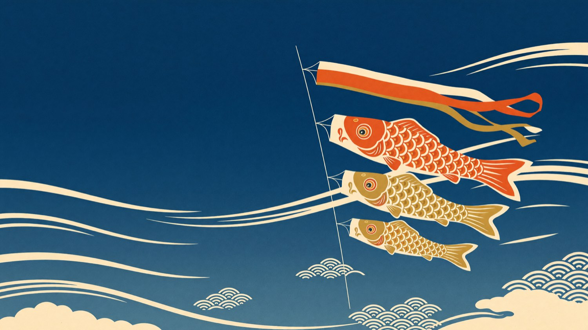
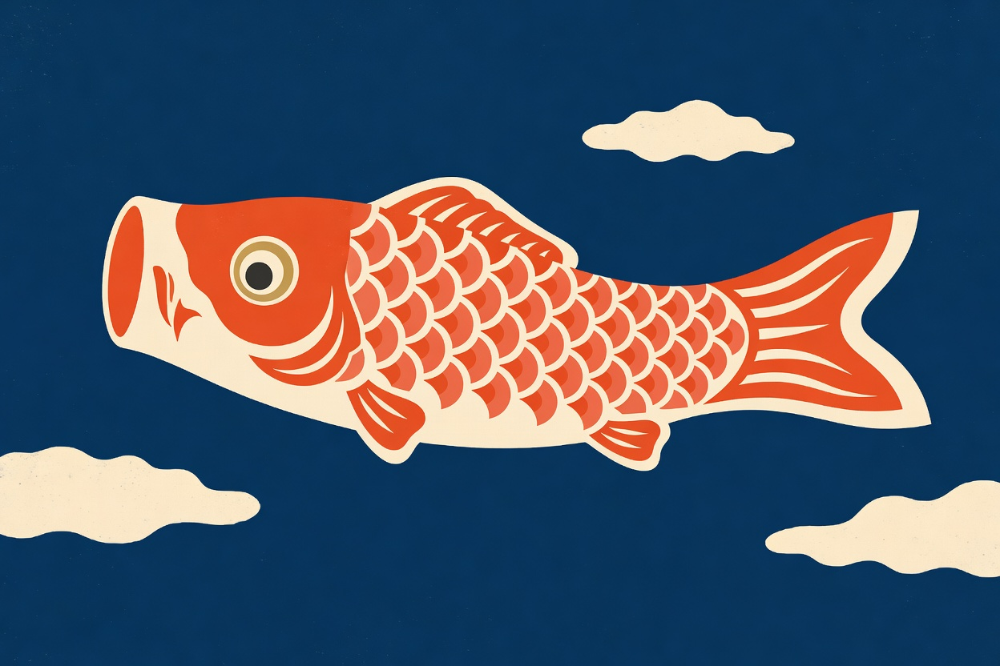
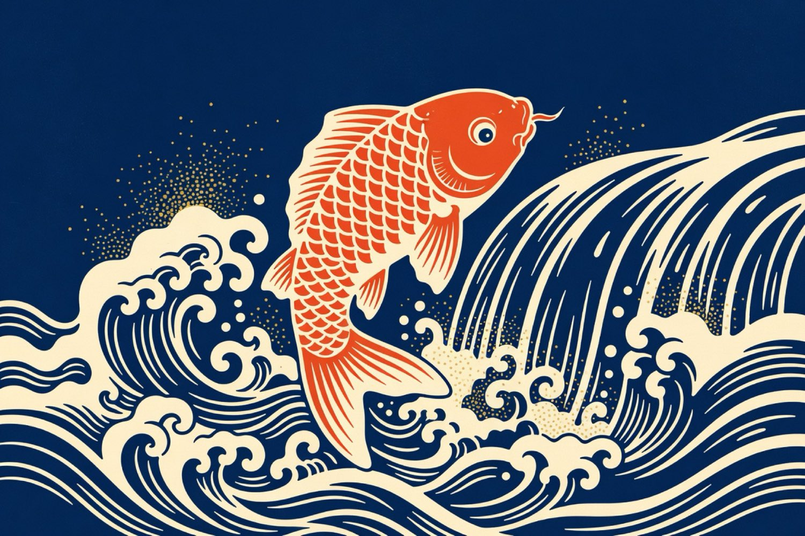
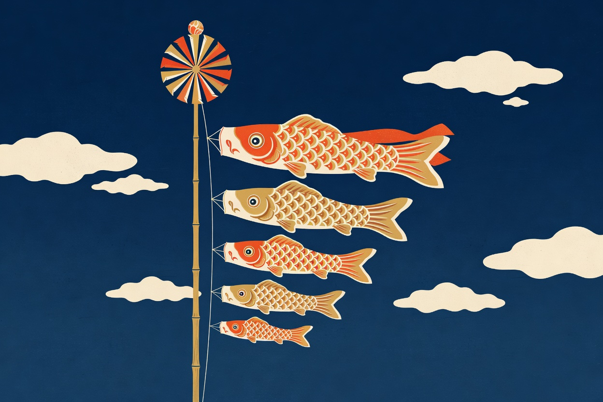

Milestones that matter
Log a first step, a lost tooth, a bike without training wheels. Tag the ones that count and they rise to the top of the streamer.

Aizora is the family journal where every child swims up their own indigo sky — first words, growing inches, the small ordinary days. Hang a carp for each one and watch the year fill out.

A carp for each childOn Children's Day, a family flies one koinobori for every child — sized eldest to youngest, swimming together on a single line. Aizora makes that the shape of the whole app. Each child gets a carp; each carp carries their journal.
Three quiet tools that turn scattered photos and half-remembered firsts into a record you'll actually keep.
Log a first step, a lost tooth, a bike without training wheels. Tag the ones that count and they rise to the top of the streamer.
Height, weight, shoe size, words spoken. Add a number when you have one; Aizora draws the curve so you can see them climbing.
All your carp on one line. Switch between children, compare the same age side by side, and share a single view with the people who love them.

There's an old story: a carp that swims all the way up the falls becomes a dragon. Aizora is built on the small version of that — a moment a day, kept simply, until the climb is plain to see.

One line, the whole familyInvite the people who matter with a single link. They see the carp rise in real time, leave a note, react to a photo — and never touch your private records. When the year ends, turn the whole sky into a hardcover book in two clicks.
"I started Aizora the week our second was born. Two years later I scrolled the whole sky in one sitting and cried. It's the only app I've never let lapse."
Begin with one child, free forever. Add the whole family and the printed book whenever you're ready — from ¥600 / month.
Cancel anytime · Export your data anytime · Built for Children's Day, kept all year.